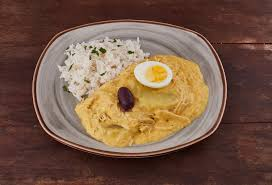

Ají de Gallina

Description
El ají de gallina es un plato típico de la gastronomía peruana, concretamente de la costa, que consiste en un ají o crema espesa con pechuga de gallina deshilachada. Esta crema es servida con papas cocidas, y en ocasiones con arroz blanco. Es común reemplazar la gallina por pollo.
This is a delicious, traditional Peruvian chicken stew in a spicy, nutty cheese sauce. It takes time, but is well worth it! I serve this over boiled white rice and baby yellow potatoes.
Ingredients
- 2 pounds skinless, bone-in chicken breast halves
- 1 onion, coarsely chopped
- 2 carrots, chopped
- 2 cloves garlic
- 2 quarts water
- 1 loaf white bread, crusts removed and cubed
- 1 (12 fluid ounce) can evaporated milk
- ½ cup grated Parmesan cheese
- ¼ cup walnut pieces
- 1 teaspoon vegetable oil
- 2 cloves garlic, minced
- 1 onion, chopped
- 2 teaspoons aji amarillo chile paste
- 2 teaspoons ground turmeric
- 4 hard-cooked eggs, sliced
- ¼ cup kalamata olives, pitted and quartered
Steps
- Place chicken breasts, onion, carrot, and 2 cloves garlic in a large saucepan, pour in 2 quarts of water and slowly bring to a simmer over medium-high heat. Skim off the foam which forms on top, then cover, reduce heat to medium-low, and simmer until the chicken is tender, about 30 minutes. Remove chicken to a plate and allow to cool. Strain the resulting chicken stock, discarding the vegetables.
- Pour evaporated milk and 1/2 cup chicken stock into the bowl of a blender. Add bread cubes and puree until smooth. Add Parmesan cheese and walnuts; puree until smooth. Shred the cooled chicken and discard the bones.
- Heat vegetable oil in a large saucepan over medium heat. Stir in minced garlic and minced onion; cook until the onion has softened and turned translucent, about 5 minutes. Stir in shredded chicken and aji amarillo until heated through. Pour in bread puree and cook until hot, stirring frequently. Add more chicken stock if needed to keep from getting too thick. Season with turmeric and simmer for 5 minutes more.
- Serve garnished with hard-cooked egg slices and sprinkled with kalamata olives.